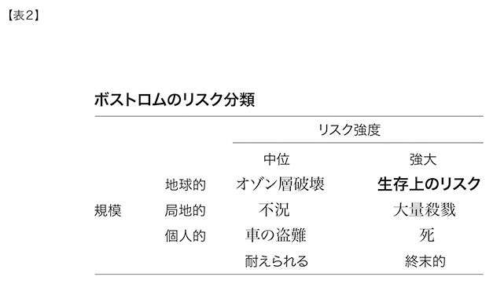

われわれは新しい世紀を迎えようとしているが、そこには計画も、統制も、ブレーキもない……唯一考えられる現実的な選択肢は、放棄することである。つまり危険すぎるテクノロジーの開発を制限することである。そのためにはある種の知識を追求することは制限しなければならない。
──ビル・ジョイ 「なぜ未来はわれわれを必要としないのか（Why the Future Doesn't Need Us）」
環境主義者たちはいまや、富と技術能力を十分に備えた世界という考え方とは、真っ向から対決していかなければならない。もうこれ以上追求すべきではないのだ。
──ビル・マッキベン 地球温暖化を初めて指摘した環境主義者001
進歩が正しかった時代があったかもしれない。しかしそれは長く続きすぎた。
──オグデン・ナッシュ 米国の作家（一九〇二－｜七一年）
一九六〇年代の末、わたしは急進的な環境活動家に変身していた。わたしは寄せ集めの活動家グループと一緒におんぼろのハリバ〔カレイに似た大型寒海魚〕漁船に乗って北太平洋を横切り、ニクソン大統領時代最後の水爆実験を阻止しようとしていた。その過程でわたしはグリーンピースを共同で設立した。……環境主義者たちはもっともらしい議論をし、鯨の保護や空気や水の浄化などよい行いもした。しかし今や彼らはしっぺ返しを受けている。環境主義者たちはバイオテクノロジー全般、特に遺伝子工学にたいする反対運動を起こしたことで、自らの知的・道徳的な破綻を露呈してしまった。人類や環境に大いに貢献しうるテクノロジーをいっさい認めない方針をとったため、科学者、知識人そして国際主義者たちから見放されてしまったのだ。メディアや大衆がその姿勢の異常さに気がつくのは時間の問題だろう。
──パトリック・ムーア
ただ私は、テクノロジーを嫌悪するあまりそこから逃避することは、彼らにとって自滅的なことだと思っているのだ。ブッダや神が花びらや山の頂に住んでいるのと同じように、デジタル・コンピューターの回路やバイクの変速ギアのなかにもそのまま真理が宿っているのである。そう考えなければ、ブッダの品位を汚すことになる──それはとりもなおさず自分自身を卑しめることに他ならない。
──ロバート・Ｍ・パーシグ『禅とオートバイ修理技術─価値の探究（Zen and the Art of Motorcycle Maintenance）』〔五十嵐美克訳／めるくまーる〕
次のような記事があったとしよう。これがウェブで入手できるとはとうてい思えないだろう。
敵に目にものを見せる：‥簡単に入手可能な材料で自前の原子爆弾を作る方法002
インフルエンザ・ウィルスをあなたの大学の実験室で毒蛇の解毒用に改良する方法
大腸菌に寄生するウィルスを改良する一〇のやさしい方法
天然痘ワクチンに対抗する天然痘の作り方
インターネット上で入手可能な材料で自前の化学兵器を作ろう
自己誘導型の無人低空飛行機を、安価な航空機、ＧＰＳ、ノートパソコンを使って作る方法
あるいは、こんなものはどうだろうか？
一〇大病原体の遺伝子
主要な高層ビルの平面図
米国の原子炉の配置
現代社会の弱点ベスト一〇〇
インターネットの弱点ベストテン
米国人一億人の個人健康情報
人気ポルノサイトの顧客リスト
もし最初にあげた記事のウェブサイトに投稿でもしたら、誰でもほぼ間違いなく、ただちにＦＢＩの訪問を受けるだろう。一五歳の高校生ネイト・チッコロがそうだった。二〇〇〇年三月のことである。彼は学校の理科プロジェクトで原爆の模型を作ったが、それはおそろしいほど精密であることがわかった。その結果メディアは大騒ぎになったが、チッコロはＡＢＣニュースに次のように語った。「誰かがちらっと言ったんだ。いいかい？ 今ならインターネットを調べればわかるよって。で、ぼくはなんていうか、そういうことには少し疎かったんだけどやってみた。そうしたらちょっとクリックしただけで簡単にそういうサイトに行けたんだ003」
もちろんチッコロは肝心の材料であるプルトニウムをもっていなかったし、手に入れようとも思わなかった。しかしこの話はメディア界に衝撃波を引き起こした。核拡散に悩むお偉方は言うまでもない。チッコロによれば原爆の設計に関するウェブページが五六三もあったという。そしてそれが発表されるやいなや、それらは直ちに削除されることになった。しかし残念ながらインターネット上で情報を除去しようとするのは、大海原をほうきで掃くのに等しい。いまでもまだ簡単にアクセスできるサイトが残っている。本書でそのＵＲＬを公表するつもりはないが、見つけるのはわけはない。
先ほどの記事の題名は架空のものだが、これらの内容全てについてインターネット上で詳細な情報が得られる004。ウェブは並外れた調査ツールだ。わたし自身の経験でも、かつては図書館で半日かかった調査が、今では数分で済んでしまう。これは有益なテクノロジーを推進しようとする人々にとっては巨大で明らかなメリットだが、同時に社会の主流とは敵対する価値観をもつ人々をも強化するおそれがある。するとわれわれは危険にさらされていることになるのだろうか？ 答えは明らかにイエスだ。どのくらい危険で、それにどう対処すべきか、が本章の主題である。
この問題がわたしの頭から離れなくなったのは、少なくとも二〇年昔にさかのぼる。わたしは一九八〇年代半ばに『インテリジェント・マシンの時代』を書いたとき、当時現れた遺伝子工学に大いに関心をもっていた。もしそのテクノロジーに精通して必要な機器を扱える人々なら、バクテリアやウィルス性病原体を改変して新種の病気を作りだせると考えた005。破壊的な、あるいは単に不注意な人間にかかれば、こうした人工の病原体は高度の感染性、潜伏能力と破壊能力を併せもつおそれがあった。
こんなことは八〇年代には簡単にできることではなかったが、実現不可能というわけでもなかった。ソヴィエト連邦などの諸国による生物兵器計画は、まさにこれを進めていたものであることがいまでは判明している006。こんな恐怖の影について自分の本では語るまいときっぱり決心したのはこのときだ。邪悪な人々にいかなる破壊的なヒントも与えたくなかったからだ。ある日ラジオをつけたら、惨事が起きていて、犯人がレイ・カーツワイルからヒントをもらったなどと語っているのを聞きたくはなかった。
そう決心した影響もあって、わたしの本は未来技術の利益面だけを強調しており、落とし穴については無視している、というもっともな批判を被ることになった。だから一九九七－｜九八年に『スピリチュアル・マシーン』を書いたときには、わたしは期待と危険の両方を平等に扱うことにしたのである007。そのときまでには一般の関心も熱していたので（たとえば、一九九五年の映画『アウトブレイク』では、新種のウィルス病原体の解放による恐怖とパニックを描いている）、この問題を無理なく正面から扱うことができた。
一九九八年九月、ちょうど原稿を書き終えたわたしは、ハイテク界では名の知れた、そして昔からの同僚であるビル・ジョイをタホー湖のほとりのバーに訪ねた。ジョイについてはかねがね対話式ウェブシステムの主要なソフトウェア言語（ＪＡＶＡ）の開発における業績や、サンマイクロシステムズ社を共同で設立したことを賞賛してはいたものの、この短い再会の目当てはジョイではなく、むしろ一緒に狭い席に座っていた第三の人物、ジョン・サール〔強いＡＩという概念を（実現不能という立場から）最初に提唱した〕だった。カリフォルニア大学バークレー校の著名な哲学者であるサールは、人間の意識という深い神秘を、レイ・カーツワイルのような物質主義者（ただしこれは返上させていただくが）の攻撃らしきものから守ることをもって名をあげていた。
サールとわたしとは、ジョージ・ギルダーが主催するテレコズム〔ネットワークの爆発的増大によってもたらされる社会の変化〕に関する会議の最終セッションで、機械は意識をもてるかという問題を議論したばかりだった。そのセッションは「スピリチュアル・マシン」と題され、わたしが間もなく上梓する本が哲学的にいかなる意味をもちうるかをもっぱら討論するものだった。ジョイにはわたしの本の原稿を渡して、サールとわたしとの間で交わされていた、意識をめぐる議論についていけるようにしてあった。
ところが実際のところ、ジョイはまったく別の問題、特にわたしが同書で提示した三つの新しいテクノロジー、遺伝学、ナノテクノロジー、ロボット工学（先に述べたＧＮＲ）によって人類文明に迫りくる危険のほうに興味をもったのだ。未来のテクノロジーの問題点に関するわたしの議論はジョイに警戒心を抱かせ、そのことが後日彼に、今では有名となった「ワイアード」誌の特集記事「なぜ未来はわれわれを必要としないか008」を書かせることになった。この論文でジョイは、科学界や技術界の仲間にわたしの予測の信憑性を訊ね、それらテクノロジーの能力がいかに現実のものに近づいているか知って愕然としたと述べている。
ジョイの論文は完全に悲観的なシナリオに的を絞ったもので、嵐のような反響を巻き起こした。技術界の指導的地位にある者が、新しい未来の技術から生じる恐ろしい危険を告知する、その典型的な姿があった。投機家で生粋の資本主義者だったジョージ・ソロスが、無制限な資本主義の行きすぎを漠然と批判したときに注目を集めたのと同じようなものだ。もっともジョイの巻き起した論争ははるかに激烈なものだった。「ニューヨークタイムズ」紙は、ジョイの論文をめぐって約一万件もの投書が寄せられ、その数は技術問題としてはかつてないほどだったと伝えている。こうしてタホー湖でくつろごうというわたしの目論見は、二つの長きにわたる論争を引き起こす結果になってしまった。ジョン・サールとの対話は今日まで続いているのだ。
ジョイの懸念をたきつけたのは当のわたしであったにもかかわらず、わたしの「技術楽観論者」という評判は変わることなく、ジョイとわたしはさまざまなフォーラムに招かれて、未来の技術の危険と期待をそれぞれに議論することになった。わたしは議論の「期待」面を担当する役をふられたのだが、しばしば「危険」がありうるとするジョイの姿勢を弁護するためにもち時間の大半を費やすことになった。
多くの人がジョイの論文を、全ての技術開発ではないにしても、ナノテクノロジーのような「危険な開発」は、広く放棄すべきであるという主張として受け取った。しかしジョイは現在ベンチャーキャピタリストとして、クライナー・パーキンス・コフィールド・アンド・バイアーズという伝説的なシリコンバレー企業とともに、再生可能なエネルギーや他の天然資源へのナノテクノロジーの応用に投資している。彼は広く放棄すべきだというのは自分の姿勢を誤解したものであり、まったく本意ではなかったと言う。最近個人的に交わしたｅメールでジョイは、「危険すぎるテクノロジーの開発を制限すべきだ」（本章最初の引用を参照）と提唱したかったのであって、全面的な禁止を主張したかったのではない、と言っている。たとえばそれは、自己複製的なナノテクノロジーの禁止であり、これはナノテクノロジーのパイオニアであるエリック・ドレクスラーやその妻クリスティン・ピーターソンが設立したフォアサイト研究所の提唱するガイドラインに近い。このガイドラインは全体として妥当なものだとわたしは思う。ただし二つの例外が必要であり、それについては以下で述べる（「きめ細かい放棄」参照）。
他にもジョイは病原体の遺伝子配列をインターネット上に公表することの禁止を主張しており、わたしはこれにも賛成だ。ジョイは科学者たちがこの方向で自発的に国際的な規制を採択するのを望んでいる。そして「もし大惨事が起きるまで待っていたとしたら、もっと厳しい全面的な規制を招くことになるだろう」「こうした規制は緩やかなものにすることで最大限の利益を得られるようにしたい」と述べている。
その他、たとえば地球温暖化の最初の警告者のひとりである環境主義者ビル・マッキベンのように、バイオテクノロジーやナノテクノロジーといった広範にわたる技術の放棄を、さらには全てのテクノロジーの放棄を提唱する人々もいる。あとでくわしく述べるように（「広範囲な放棄」参照）、広範囲にわたるテクノロジー放棄は、本質的にあらゆる技術開発を断念しなければ達成不可能だろう。その場合『すばらしい新世界』〔オルダス・ハックスレーの著書名〕のような全体主義的政府が生まれてあらゆる技術開発を禁止しなければならなくなる。このような解決策はわれわれの民主的な価値観と相容れないし、危険はもっと増すだろう。なぜならテクノロジーは地下にもぐり、利益を得るのはもっとも無責任な実践者（たとえば、ならずもの国家）だけになるからだ。
それはおよそ善き時代でもあれば、およそ悪しき時代でもあった。知恵の時代であるとともに、愚痴の時代でもあった。信念の時代でもあれば、不信の時代でもあった。光明の時でもあれば、暗黒の時でもあった。希望の春でもあれば、絶望の冬でもあった。前途はすべて洋々たる希望にあふれているようでもあれば、また前途はいっさい暗黒、虚無とも見えた。人々は真一文字に天国を指しているかのようでもあれば、また一路その逆を歩んでいるかのようにも見えた
──チャールズ・ディケンズ『二都物語』〔中野好夫訳、新潮文庫〕
脱人間になることを拒否し、従来型の人類のほうがよいと考えるのは、鋤の弁護をするようなものである。鋤のような古い道具は、役に立たないと批判されても、なくなることはないものだ。
──ジェームズ・ヒューズ コネティカット州トリニティ・カレッジの社会学者、トランス・ヒューマニスト協会事務局長、「人類は脱人間になることを歓迎すべきか拒否すべきか」の討議で
テクノロジーによってさまざまな恵み、つまり長寿と健康、肉体的・精神的な苦痛からの解放、そして多くの新しい創造的な可能性といった利点が与えられる一方で、新しい危険が生まれている。テクノロジーによって人類の創造的な面も破壊的な面もともに力を得ているのだ。
人類の大半は、その歴史につきものだった貧困、病気、重労働や不幸がすでに遠のいたことを実感している。現在、多くの人々は生きるだけで精一杯という段階を脱して、仕事に満足と意味を見出している。自己表現の手段はかつてないほど強力になっている。世界の発展途上地域のすみずみまで広がっているウェブによって、高度の教育と医学知識の利用が大幅に進んでいる。文化、芸術、そして人類の指数関数的に増大している知識ベースは世界規模で共有できる。
第二次大戦後、たった二〇前後から出発した民主主義国家が現在一〇〇を超えるのは、世界規模で張りめぐらされた電子通信のおかげだ。鉄のカーテンの崩壊などといった民主化の最大の波は、一九九〇年代になってインターネットおよび関連技術の発展によって生まれた。もちろんこれらの分野にはまだなしとげるべきことがたくさんある。
たとえば、バイオテクノロジーは病気や老化の進行を逆行させるための大飛躍をとげる初期段階にある。ナノテクノロジーとロボット工学が生活のすみずみにまで行き渡るようになるのはまだ二〇～三〇年先であり、これらの利益は指数関数的な拡大を続けるだろう。先の各章で見たように、これらのテクノロジーは並外れた富を創造し、安価な原材料や情報をどんな製品にでも変換できるため、貧困は克服され、物質的な欲求は全て満たされていく。
ヴァーチャル環境で過ごす時間が増え、ヴァーチャル・リアリティの中で、現実であれ、シミュレーションであれ、誰とでもどんな種類の経験でも可能になる。ナノテクノロジーも物理世界を必要や欲求に応じて変容させる同様の能力を与えてくれる。終焉に向かっていく工業社会時代が残した未解決の宿題は克服され、環境破壊の爪痕も回復できるだろう。ナノ生産された燃料電池や太陽電池によってクリーンエネルギーが得られる。ナノボットは人間の体内で病原体を破壊し、異常なタンパク質やプロトフィブリルの残骸を除去し、ＤＮＡを補修し、老化を止めてくれる。体内・脳内の全システムは再設計されて、ずっと高性能で長もちするものとなっていくだろう。
非生物的な知能が早晩優勢になるとしても、もっとも重要なのは生物的知能と非生物的知能とが融合するという点だ。人間的であるということが意味する内容は大きく広がる。科学から芸術にわたるあらゆる形の知識を創造し鑑賞する能力は大幅に強化され、身の回りの環境や他者と関わり合う能力はますます伸展していく。
しかし一方では……
今日の太陽電池並みに非効率的な「葉」をもった「植物」が、本物の植物を駆逐し、生物環境を食べられない葉で埋め尽くすかもしれない。タフな雑食性の「バクテリア」が本物のバクテリアを駆逐するかもしれない。なにせ彼らは風に舞う花粉のように広がり、すみやかに複製され、数日のうちに生物環境をちりに帰してしまうこともできるのだ。危険な複製物は制止するにはあまりに頑丈で小さく、あらかじめ対策を講じていなければ急速に広がってしまうだろう。われわれはウィルスやショウジョウバエを抑え込むのでさえ、てこずっているのだから。
──エリック・ドレクスラー
二〇世紀にテクノロジーは多くの目覚ましい成果をあげた反面、スターリンの戦車からヒトラーの列車に至るまで、人類の破壊的な性格を増幅するおそるべき能力をも見せつけた。二〇〇一年九月一一日の悲劇的な事件も、破壊を目指す集団に奪われたテクノロジー（ジェット機とビルディング）の一例である。人類は今日まだ、地球の哺乳類を全て絶滅させるのに十分な（そしてあり余る）数の核兵器とともに生きているのだ。
一九八〇年代以来、どこの大学のバイオテクノロジー実験室にも潜在的に核兵器より危険で攻撃的な病原体を作りだすための手段と知識が存在してきた009。ジョンズ・ホプキンズ大学で行われた「暗い冬」と呼ばれる戦争シミュレーションでは、米国の三都市に通常の天然痘を意図的にバラまくだけで一〇〇万人が死ぬおそれがあると試算された。そのウィルスがバイオテクノロジーによって既存の天然痘ワクチンに打ち勝つように処理されていたとすると、結果はさらにひどいものになるだろう010。こういう悪夢が現実に起こりうることは、二〇〇一年にオーストラリアで行われた実験で明らかになった。そこでマウス痘ウィルスの遺伝子がうっかり改変され、免疫反応が変わってしまったのだ。この変化したウィルスを抑えるのにマウス痘ウィルスのワクチンは無力だった011。こうした危険は歴史上無数にある。腺ペストではヨーロッパ人口の三分の一が死んだし、近年では一九一八年のインフルエンザで世界で二〇〇〇万人が死んでいる012。
こうした脅威は複雑系（人類やテクノロジーのような）のもつ力、効率、知能などの加速を妨げるのだろうか？ 地球上に見られる複雑性の増大は、長い歴史の中で内外の要因による大災害に何回となく遭ってきたにもかかわらず、なめらかに加速してきた。これは生物進化（大きな小惑星や流星との遭遇という災害に見舞われた）にも、人類の歴史（とぎれることのない一連の大戦争が時代の節目となってきた）にもあてはまる。
しかしＳＡＲＳ（重症急性呼吸器症候群）ウィルスにたいして世界が効果的に対応できたことは、少しは励ましになるはずだ。本書を書いている時点でＳＡＲＳがさらに悪性になって再発しないとも言えないが、封じ込め作戦がある程度まで奏功し、この悲惨な感染騒ぎが真の大惨事につながることは防げたようだ。対応の中には、検疫やマスクといった昔ながらのローテクな手段も含まれていた。
しかしこの封じ込めというアプローチも、最近やっと実用化された最新のツールなしには、効果がなかっただろう。ＳＡＲＳウィルスのＤＮＡ配列は発生後三一日以内に特定できた。ＨＩＶでは一五年もかかったのと比べてほしい。おかげで感染者を速やかに特定するための効果的な試験法をすぐに開発できた。さらに、瞬時に地球規模で通信可能な手段のおかげで、世界的に足並みを揃えた対応がとれた。昔ウィルスが何度か世界を荒廃させたときに比べれば驚くべき進歩だ。
テクノロジーがＧＮＲの完全実現を目指して加速するにつれて、絡み合った二つの同等の可能性が生まれる。すなわち何倍にも広がった人間の知能から生まれる豊かな創造性と、多数の新しい深刻な危険だ。この種の懸念として衆目を集めた代表的なものとして、ナノボットの無制限な複製がある。ナノボット技術を有効に活用するには、そうした知的に設計された装置が何兆も必要になる。そのレベルまで規模を広げるには、ナノボットを自己複製──つまり本質的に生物世界が用いるのと同じ手法（一個の受精卵細胞が人間の中で数兆個に増える手法）──できるようにする必要がある。そして生物的自己複製のエラー（すなわち癌）が生物を破壊するように、ナノボットの自己複製を抑制するメカニズムが壊れると、全ての物理的な個体は生物・非生物を問わず、危機に瀕することになる。これがいわゆるグレー・グー・シナリオだ。
生物は、人類も含めて、ナノボットの攻撃が指数関数的に広がるとき最初の犠牲者になるだろう。ナノボット製造の基本設計では主要な構成要素として炭素を使う。炭素は四方向で結合する独特の能力のおかげで、分子を組み立てるうえで理想的な構成要素なのだ。炭素分子は直線状の鎖、ジグザグ、輪、ナノチューブ（六角形を並べて筒状にしたもの）、シート、バッキーボール（六角形と五角形を並べてサッカーボール状にしたもの）〔フラーレンのこと〕、その他さまざまな形をとれる。生物も同じように炭素を使っているので、病原体としてのナノボットは地球上の生物体を理想的な栄養源と見なすだろう。生物の個体からはブドウ糖やＡＴＰという形で蓄えられたエネルギーを補給できるし013、酸素、硫黄、鉄、カルシウムその他の有用な微量物質も得られる。
ナノボットが制御を失って複製されたとしたら、地上の生物を絶滅させるのにどのくらいの時間がかかるだろうか？ 生物総量〔一般には単位面積あたりの生物総量のことだが、ここでは全地球上のそれを指す〕を合わせると10の45乗の桁の炭素原子をもつ014。一方複製しようというナノボット一個がもつ炭素原子は、合理的に見積もって約10の６乗個である（この分析ではこれらの数字の正確さはあまり関係なく、大体の桁が合えば十分だ）。よってこの悪玉のナノボットがバイオマスと全て置き換わるためには、自分自身のコピーを10の39乗の桁まで作る必要があるが、そのためには複製を一三〇回繰り返せばよい（２の130乗≒10の39乗）（そのたびごとに滅びる生物が二倍に増えていく可能性がある）。ロバート・フレイタスは一回の複製時間を最低一〇〇秒と見積もっているから、一三〇回の複製には約三時間半かかる015。しかし実際の破壊速度はもっと遅いだろう。なぜなら地上の生物は「効率的には」分布していないからだ。だから破壊の前線の実際の移動が制約要素となる。ナノボットは小さいため、高速移動はできない。そのような破壊のプロセスが地球を覆い尽くすためには数週間かかりそうだ。
この考えに立つと、さらに頭の痛い可能性が出てくる。つまりナノボットは攻撃を二段階に分け、まず数週間かけて地球上の生物体に広がる。しかしこのときに攻撃するのは炭素一〇〇〇兆（10の15乗）ごとにひとつといったように、炭素原子のほんの一部だけだ。このようにナノボットの密度が極端に低い間は、ナノボットはほとんど目立たない。そして、ある「最適な」点で、第二段階に移る。ここでは種となるナノボットが生物体を滅ぼすまでに急速に拡大する。種ナノボットのそれぞれが一〇〇〇兆個に増えるためには、約五〇回の複製しか、あるいは時間にして約九〇分しかかからない。ナノボットはすでに地球上の生物体全体に広がって位置についているから、破壊波の前線の移動はもう制約要素にはならない。
重要な点は、利用価値のある生物体は防御なしではあっという間にグレー・グーに滅ぼされてしまうだろうということだ。だから後述するように（「防御技術の開発と規制の影響」参照）、これらのシナリオが現実のものになる前に、ナノテクノロジー免疫システムを整備しておく必要があるのは明らかだ。この免疫システムは、明白な破壊的複製だけでなく、ひじょうに低密度であっても潜在的に危険な（隠密の）複製にも対抗できなければならない。
マイク・トレーダー（レスポンシブル・ナノテクノロジー・センター所長）とクリス・フェニックス（同研究部長）、エリック・ドレクスラー、ロバート・フレイタス、ラルフ・マークルその他は、将来のＭＮＴ（マイクロ・ナノテクノロジー）製造デバイスは、自己複製ナノデバイスの産出を防止するセーフガードのもとでなら作れるようにすべきだと指摘している016。この戦略のいくつかについては以下で検討する。しかしこういう見方も確かに重要なものではあるが、グレー・グーの悪夢を消し去るには至らない。自己複製型のナノボットを作るのには、製造上の理由以外にも理由があるからだ。たとえば先のナノテクノロジー免疫システムには、最終的には自己複製機能が必要になるだろう。そうでないとわれわれを守ってはくれない。また自己複製機能は、第六章で検討したように、ナノボットが地球以外に知能を急速に拡大するためにも必要となる。広範な軍事利用もありそうだ。あとで述べるブロードキャスト型アーキテクチャ（「きめ細かい放棄」参照）のような望ましくない自己複製にたいするセーフガードでは、確信犯的な敵やテロリズムにはとうてい太刀打ちできないだろう。
フレイタスは他にも破壊的なナノボットのシナリオを多数描いている017。たとえば「グレー・プランクトン」シナリオでは、悪意あるナノボットが、海水中に溶けているメタンや二酸化炭素として蓄積されている炭素を使う。これら海洋に存在する資源は、地上の生物の一〇倍もの炭素を供給できる。「グレー・ダスト」シナリオでは、複製ナノボットは空中のちりに含まれる基本元素や日光を動力に使う。「グレー・ライカン〔こけ類〕」シナリオでは、岩に付着した炭素などの元素が使われる。
もしささいな知識が危険だというなら、危険から逃れた人間などどこにいるのか？
──トマス・ヘンリー
これらの重大な危険への対処手段はのちほど（「ＧＮＲ防御のひとつの計画」の節参照）検討するが、現在考えつく戦略で一〇〇パーセント大丈夫と言えるものはない。これらのリスクはニック・ボストロムが「生存上のリスク」と呼ぶもので、表２で右上に定義された危険である018。

地球上の生命体が人類の生みだした生存の危機に初めて遭遇したのは二〇世紀の半ばで、水爆の出現とそれに続く核軍事力による冷戦構造に伴ってのことだった。ケネディ大統領はキューバのミサイル危機に際して、全面核戦争になる可能性を三三パーセントから五〇パーセントの間と見積もったということだ019。有名な情報理論家であるジョン・フォン・ノイマンは、空軍戦略ミサイル評価委員会の委員長や核戦略に関する政府アドバイザーになったが、核戦争の大衝突（キューバのミサイル危機以前の）の可能性は一〇〇パーセント近いと見積もった020。一九六〇年代の状況からすれば、いかなる情報通の識者といえども、世界にその後四〇年間、実験以外の核爆発がないだろうと予測することはまず不可能だった。
混沌とした国際情勢であるにもかかわらず、これまでの戦争で核兵器の使用をなんとか避けてこられたことは喜ぶべき事態と言うべきだろう。もちろん安心は禁物だ。とにかく全人類を滅ぼして余りある水爆がまだ存在するのだ021。あまり議論されていないが、米国とロシアには、関係改善にもかかわらず、大量のＩＣＢＭがまだ配備されている。
核の拡散状況や核物質および関連ノウハウが広範囲に利用できることは、重大な懸念のひとつではあるが、文明の存亡の危機に関わるものとは言えない（ＩＣＢＭを巻き込んだ全面的な核戦争だけが人類の生存にリスクをもたらす）。核拡散と核テロリズムは大量殺戮と同じ「強大－｜局地的」なリスク分野に属する。しかし自爆テロにたいしては相互確証破壊〔二国の一方が核の先制攻撃を受けても報復攻撃で相手に大打撃を与えうる核戦力を双方で保持していることが、核抑止力として働くという考え〕という論理が働かないため、懸念は確かに大きい。
議論の余地はあるが、現在さらに新たな生存に関わるリスクが加わっている。生命工学により作られたウィルスがそれで、伝染しやすく、潜伏期間が長く、最終的に死をもたらすものだ。ウィルスにはインフルエンザや普通の風邪のように感染しやすいものもあるし、ＨＩＶのように致死的なものもあるが、両方の特性を併せもつウィルスはめったにない。現代の人類は感染率の高いウィルスの多くにたいして生まれつきの免疫をもつようになった人類の子孫である。ウィルスなど病原体の大流行に負けない耐性を身につけていられるのは、人類の有性生殖の利点のひとつだが、個体間の遺伝的な多様性が生じやすいため、特定のウィルスにたいする反応には大差ができてしまう。ペストは大厄災ではあったが欧州全てが絶滅することはなかった。また天然痘のようなウィルスは、感染しやすく、また致死的であるという両方の特性を併せもつが、流行の速度がゆっくりであったため、社会がワクチンという形で技術的な防御をする余裕があった。とは言え遺伝子工学からは、自然界にも技術的にも防御手段がない新種の病原体が突然出現するおそれがあり、そうした漸進的に進化する防御策では間に合わない可能性がある。
感染力の高い、普通の風邪やインフルエンザのウィルスに、致死的な有毒遺伝子を簡単に付加することができるようになったことで、生存に関わるリスクについて新たなるシナリオが生まれた。こうした見通しをきっかけにして、アシロマ会議〔一九七五年にカリフォルニア州アシロマで開かれた〕でそのような脅威への対処法を検討することとなり、新たに安全・倫理ガイドラインを策定することになった。これらのガイドラインはこれまでは有効だったものの、遺伝子操作を支えるテクノロジーは急速に高度化している。
二〇〇三年、世界はＳＡＲＳウィルスとの戦いに勝った。ＳＡＲＳの出現は、昔の習慣（このウィルスはおそらくジャコウネコのような外来動物から、近くに住む人間に飛び移ったと思われる）と、現代の習慣（感染は航空旅行によって短期間で世界中に広がった）の組み合わせの結果である。感染しやすく、人体外で生存期間が長い上に、一四～二〇パーセントという高い致死率を併せもつＳＡＲＳは、人間社会に新種のウィルスにたいする予行演習の場を提供してくれた。その対抗策もやはり、昔ながらの技術と現代の技術を組み合わせたものだった。
ＳＡＲＳの経験から、多くのウィルスについて、たとえ感染しやすく、またかなり致死的であっても、深刻ではあるが必ずしも生存に関わるリスクをもたらすものではないということがわかった。ＳＡＲＳは体液の排出を通じて感染する確率が高いが、空中を伝わる粒子によっては感染しにくい。潜伏期間は一日から二週間と見られる。これがもっと長いと、感染者が特定できるまでにウィルスは数世代にわたって指数関数的に広がってしまうだろう022。
ＳＡＲＳは致死的だが感染者の過半数は生存している。しかしこのＳＡＲＳより感染しやすく、潜伏期間が長く、基本的に全ての感染者にとって致死的なウィルスが、悪意をもって開発される可能性は依然として残る。天然痘はこれに近い特徴をもつ。確かにワクチンはあるが（まだ原始的なものだが）、遺伝子工学によって改変されたウィルスには効かないだろう。
以下で述べるように、バイオエンジニアリングによって作られたウィルスがその邪悪な意図を達成する余地は、それが生存に関わるリスクをもたらすものであろうとなかろうと、二〇二〇年代、ナノボットをベースにした効果的なウィルス対抗技術が生まれれば、完全に閉ざされるだろう023。しかし、ナノテクノロジーは生物個体よりも数千倍も強力で、速く、賢いので、自己複製ナノボットはさらに大きな、新たな生存に関わるリスクをもたらすだろう。ナノボットが邪悪な意図を果たす可能性は、最終的には「強いＡＩ」によって閉ざされるだろうが、当然、「非友好的な」ＡＩはそれ自体がいっそう切迫した生存に関わるリスクをもたらすだろう。それについてはのちに述べる（「「非友好的な」強いＡＩからの保護」参照）。
予防原則 ボストロム、フレイタス、その他わたしを含めてさまざまな研究者が指摘しているように、生存に関わるリスクには、試行錯誤的なアプローチでは対処しえない。それに対抗するための「予防原則」と呼ばれる考え方がある（ある行動の結果が、未知数ではあるものの、もし一部の科学者からひじょうに望ましくないリスクが少しでもあると判定されれば、そのリスクを冒すよりは、行動しないほうがはるかによい、というもの）。確かにそのようなリスクと戦う戦略は、最大限信頼できるものでなければならない。だから新種の生存にかかわるリスクを未然に除去するための第一の戦略として、テクノロジーの発展阻止を要求する執拗な声がますます高まっているのだとも言える。しかしテクノロジーを放棄することは適切な対応策とは言えず、ただ新規テクノロジーの大きな利点を損ない、破滅的な結果を招く可能性を増大させるだけだ。マックス・モアはこの種の予防原則を制限すべきであると訴え、その代わりに、行動するリスクと行動しないリスクとをバランスさせる「行動的予防の原則」を提唱している024。
生存上のリスクという新しい試練への対応を検討する前に、ボストロムその他が想定したリスクの内容をもう少し詳細に見直すべきだろう。
相互作用が小規模になるほど、爆発能力は拡大する 最近、将来の超高エネルギー粒子加速器によって、質量がエネルギーに変換されることで生じるエネルギー状態が、原子以下のレベルで連鎖反応を引き起こすのではないかという論争が起きている。そうなると、銀河系のあらゆる原子が分裂して、破壊の規模が指数関数的に拡大していくおそれがあるというのだ。こうしたシナリオはさまざまに描かれ、中にはブラックホールが生まれて太陽系は引き込まれるというものもある。
これらのシナリオは、どれもひじょうに可能性は少ないと分析されているが、物理学者がみなその危険について楽観視しているわけではない025。その数理的分析は妥当だと思えるものの、このレベルの物理的現実性を記述する式としては、まだコンセンサスを得られていないのだ。もしこのような危険がこじつけのように思えるなら、物質の尺度が小さくなればなるほど、それが爆発するときの力は大きくなるということを思い起してほしい。これはわれわれがとうに了解していることであるはずだ。
アルフレッド・ノーベルは分子の化学的な相互作用を研究してダイナマイトを発明した。ダイナマイトより数万倍も強力な原子爆弾は、大型原子における核の相互作用に基づいている。大型原子は大きな分子よりははるかに小さなスケールである。原爆より数千倍も強力な水爆は、小型原子というさらに小さなスケールの相互作用に基づいている。だからといって原子以下の粒子を操作すればさらに強力な連鎖反応が起こせるということには必ずしもならないが、大いに起こりうることではある。
この種の危険に関して言えば、破壊的な事件が起きるおそれはほとんどないとわたしは見ている。偶然に原爆ができたなどということが、いかにありそうもないことかを考えてほしい。原爆を作るには材料や製造の正確な計画が必要であり、試作品の開発には大規模で正確な技術プロジェクトを要した。偶然に水爆ができることはさらにありえない。水爆の起爆剤とするため原爆作製の条件をきっちりと整え、それに加えて水素原子核や他の元素を特別に配置する必要がある。そのうえ原子以下のレベルで新しい破壊的な連鎖反応を引き起こす正確な条件に遭遇する必要があるとすると、実現の可能性はさらに小さくなる。ただ、ひとたび起きれば壊滅的な結果となることは必至で、予防原則がそうした可能性を深刻視するのはもっともなことである。この可能性は新規の加速器実験を行う前に慎重に分析すべきだ。しかしこのリスクはわたしの二一世紀の懸念リストの中では、可能性が高いほうだとは言えない。
シミュレーションが打ち切られる ボストロムなどがあげる生存に関わるリスクの別のパターンとして、人類が生きているのはじつはシミュレーションの中であり、それが打ち切られるかもしれない、というものがある。これを防ぐのはかなり難しい。しかし人類はこのシミュレーションの主役として、その中でなにが起きるかを決められるはずだ。打ち切りを回避する最良の方法は、シミュレーションの観察者に興味をもたせることだろう。誰かが実際にシミュレーションに注目していると仮定すると、そのシミュレーションになにか続けたい理由があれば、そうでないときよりも停止されにくいと考えてよいだろう。
シミュレーションの観察者がいると仮定して、なにが興味深いか推察するのは難しいが、新しい知識を創造できるかどうかが、決定的な基準となるだろう。その場合、想像できるどんな開発よりもわくわくできて、また並外れた速さで新知識が生まれそうなのは特異点だろう。実際、爆発的な知識の特異点を達成することこそ、シミュレーションの目的かもしれないのだ。こうして“〝建設的”〟な特異点（グレー・グーによる生存上のリスクや、悪意あるＡＩによる支配などの望ましくない結果を回避する特異点）を保証することが、シミュレーションの打ち切りを防ぐ最善の道ではないだろうか。もちろん、建設的な特異点を達成しようとする理由は他にもたくさんある。
もし人類の住む世界が誰かのコンピュータ上のシミュレーションであるなら、それはひじょうに優れたシミュレーションだ──実際ひじょうに詳細なので、現実だと受け止めてもよいくらいだ。とにかくこれは人類が接近できる唯一の現実なのだ。
人類の世界は長く豊かな歴史をもっているように見える。これが意味するのは、人類の世界は実際はシミュレーションではないということか、あるいはそうであったとしても、そのシミュレーションはひじょうに長い間続いてきており、すぐには終わりそうにないということだ。もちろん、そのシミュレーションに、実際は起こってもいない長い歴史の証拠が組み込まれているということもありえる。
第六章で検討したように、進んだ文明社会はコンピューティングを実行する新しい宇宙を創造する（あるいは、言い換えれば、自身のコンピューティングを拡大し続ける）だろうと推測される。そのような他の文明社会によって作られた宇宙における人類の生存を、ひとつのシミュレーションのシナリオと見ることもできるだろう。おそらくこうしたよその文明社会が、わたしたちの宇宙で進化アルゴリズム（すなわちわれわれが目にしている進化）を実行して、テクノロジーの特異点から知識の爆発的発展を起こさせようとしているというわけだ。もしそれが本当なら、わたしたちの宇宙を見ている高度文明社会は、知識の特異点の生成に失敗し、起こりそうにもないと判断したら、シミュレーションを打ち切るかもしれない。
このシナリオもわたしの不安リスト上では可能性は高くない。否定的な結果を避ける唯一の戦略は、いずれにしてもとらねばならない戦略だからだ。
強引な来訪者 またよく言われる別の懸念は、大型小惑星や彗星の衝突だ。それは地球の歴史上何回も起きたし、当時の生物にとっては存亡の危機をもたらした。もちろんこれはテクノロジーによる危険ではない。むしろテクノロジーはこのリスクを防いでくれる（二〇～三〇年以内に確実にその能力を実現する）。小規模な衝突はよくあるが、大規模で破壊的な宇宙からの訪問者はまれである。まだそれは予想されていないし、そのような危険が発生し、侵入者に滅ぼされる前に、きっと人類の文明はそれを滅ぼせるようになっているだろう。
他の生存上の危険として、地球外知的生命体（人類が作りだしたのではない）による破壊がある。これについては第六章で検討したし、これもありそうには思えない。
ＧＮＲ──期待と危険を正しく見る 以上の消去法により、主要な懸念としてＧＮＲテクノロジーが残る。確かに、扇動されますます不快に感じられるラッダイト運動の声を真摯に受け止める必要はあるだろう。つまり広範囲にテクノロジーの進歩を放棄することでＧＮＲの真の危険を避けようというものだ。しかしあとで検討するいろいろな理由から（「放棄という考え方」参照）、放棄は解決にならない。そればかりか、もっともな懸念から不合理な解決策が生まれることもある。たとえば困難に直面する人々への対策の遅れはいまだに深刻な影響を及ぼしている──ＧＭＯ（遺伝子組み換え作物）を使用した食糧援助への反対によるアフリカの飢饉の悪化などがそうである。
広範囲にわたる放棄を実施するためには、全体主義的システムが必要になるだろう。だが全体主義的な「すばらしい新世界」は生まれそうにない。なぜなら世界規模で張りめぐらされた電子・光通信はますます強力になって、民主化を後押しするからだ。インターネット・携帯電話など国際的な通信ネットワークの出現は、民主化の拡大を推進してきた。一九九一年ミハイル・ゴルバチョフの政権を転覆させたのは戦車の上に立つボリス・エリツィンではなく、むしろ数十年来の全体主義的な情報統制を崩壊させたファックス、複写機、ビデオレコーダー、パソコンなどの秘密ネットワークだった026。一九九〇年代を特徴づけた民主化・資本主義化への動き、それに伴う経済成長などは全て、これら個人対個人のコミュニケーション・テクノロジーの加速度的な発展によって後押しされたのだ。
生存上の問題ではないが、同様に重大な問題が他にもある。それは「誰がナノボットを制御するのか？」「ナノボットは誰と話すのか？」というものだ。将来の組織（政府でも過激派グループでもよいが）や、あるいは賢明な人物なら、何兆もの検出不可能なナノボットを特定の個人や全人類に向け、その水や食糧に潜ませることができるだろう。これらのスパイボットは思想や行動を監視し、誘導し、制御さえできるかもしれない。さらに既存のナノボットもソフトウェア・ウィルスやハッキング技術によって影響されるかもしれない。われわれの肉体や脳でソフトウェアが走ることになれば（先に検討したように一部の人間はすでにこの一線を越えている）、プライバシーやセキュリティの問題は新しい緊急課題となり、そのような侵入者への対抗監視手段が工夫されることになるだろう。
避けられない未来の変容 さまざまなＧＮＲテクノロジーが多数の分野で進歩している。ＧＮＲの完全実現は、それ自体有益な数百もの小さな前進から生まれるだろう。遺伝子工学においては、すでにデザイナー病原体〔遺伝的にデザインされた病原体〕の創造手段をもつという関門を越えている。バイオテクノロジーの進歩は、生物のもつ情報処理過程の模倣とコントロールから生まれる無視できない倫理的・経済的な恩恵に後押しされて加速し続けるだろう。
ナノテクノロジーは現在テクノロジーの全分野で進んでいる小型化の必然的帰結である。電子工学、機械工学、エネルギー、医学など広範な分野の主要な加工寸法は、一〇年ごとに長さにして約四分の一の割合で縮小している。さらにナノテクノロジーとその応用を目指す研究は指数関数的に発展している。
同様に、人間の脳のリバースエンジニアリングという試みも、認知関連の病気や老化のメカニズム解明と回復など、期待されるさまざまな効果を目指して行われている。脳内の観察手段は空間的・時間的解像度の面で指数関数的に向上しており、脳のスキャン・分析から得たデータを試作品やシミュレーションに翻訳して流し込めることも実証されている。
脳のリバースエンジニアリングから得られる洞察、進展するＡＩアルゴリズムの研究全体、そしてコンピューティング・プラットフォームにおいて進行中の指数関数的な成果などから、強いＡＩ（人間レベルと同等、さらにそれを超えるもの）ができるのは必然的だ。そしていったんＡＩが人間レベルを達成すれば、それは必ず人間をはるかに超えていく。なぜならそれは人間の知能と、ナノテクノロジーの知能がすでに示している速度、メモリ容量、知識の共有という特性を併せもつだろうからだ。生物体の知能と違って、非生物的な知能は規模、容量、コストパフォーマンスにおいても指数関数的な利益を受けるのだ。
テクノロジーの全体主義的な放棄 これら全ての分野の加速的な前進を全て停止させるために考えられる方法といったら、進歩という考え自体を放棄する世界的な全体主義システムによることしかない。しかしこの悪夢のような状況をもってしても、ＧＮＲの危険は回避できないだろう。なぜなら結果的に生まれる地下活動は、より破壊的な技術の応用に向かうだろうし、その防御技術をすみやかに開発すべき責任部門が必要な手段に容易に近づけないからだ。幸いにもこのような全体主義的な結末はありそうもない。というのはますます進展している知識の分散化が、本質的に民主化を進めるからだ。
わたし自身は、これらのテクノロジーの創造的で建設的な応用が、今後とも主流になることを期待している。しかし特定の防御技術については開発投資を大幅に増加する必要がある。前述のように、現在はバイオテクノロジーの重要段階にあり、また二〇一〇年代後半にはナノテクノロジーにおいても直ちに防御技術を実行する必要のある段階に到達するだろうからだ。
テクノロジーの進展に伴うもつれあった期待と危険を見るために、過去を振り返る必要はない。二〇〇～三〇〇年前に生きていた人々に、現存する危険（たとえば原爆や水爆）を説明することを考えてみればよい。彼らはそんなリスクを冒すことなど狂気の沙汰だと思うだろう。しかし、数世紀前に人類の九九パーセントが送っていたような、短命で粗野な、病気だらけの、貧困に悩む、災害が続発する生活に戻りたいという人が現代においてどれくらいいるだろうか？027
われわれは過去を美化しがちだ。しかし多くの人はごく最近まで、ささいな事件でさえ大災害と感じられるほど極度に脆弱な生活を送っていた。二〇〇年前、女性の平均寿命はその記録保持国であるスウェーデンで約三五歳であり、現在最高の日本女性の平均寿命である約八五歳に比べて極端に短い。男性の寿命は約三三歳で、現在は記録保持国で七九歳だ028。夕食の準備に半日もかかり、多くの人が重労働にあえいでいた。社会的な救済策もなかった。今でもかなりの人々がこうした不安定な生活を送っている。これがテクノロジーの進歩とそのための経済的な支援を強化し続けるべき少なくともひとつの理由だ。テクノロジーだけが、社会への貢献が可能なその能力を今後も飛躍的に向上させ、貧困、病気、汚染その他、現代社会をとりまく問題を解決するために必要な巨大な力をもつことができるのだ。
新しいテクノロジーが社会に及ぼす影響は、だいたい次の三つの段階を経ることが多い。まず長年の問題を克服する能力への畏怖と驚嘆、次にこれら新テクノロジーに伴う新しい重大な危険への恐怖、そして最後は、実行可能で責任のある唯一の道は、危険を管理しながら成果を得るべく注意深い道をとることだ、という悟りだ。
言うまでもないが、われわれはすでにテクノロジーの短所を経験している──たとえば、戦争による殺戮と破壊がそうだ。第一次産業革命の粗野なテクノロジーによって、一世紀前に地球に存在した種の多くが絶滅した。集中したテクノロジー（建物、都市、航空機、発電所など）は、明らかに不安定だ。
「ＮＢＣ」（核、生物、化学）の戦争技術は、ごく最近まで使用され、また脅しの材料とされてきた029。それよりはるかに強力なＧＮＲテクノロジーは、新たに強大な局地的および生存上のリスクとしてわれわれを脅かしている。もし遺伝子を組み換えたデザイナー病原体やナノテク生産された自己複製する個体などの不安がなんとか克服されたとしても、人類の知能に匹敵し、究極的には上回る知能をもつロボットが現れるだろう。それらは強力な助けになるかもしれないが、われわれ生物としての人間だけには友好的であり続けると誰が保証できるだろうか？
強いＡＩ 強いＡＩは必ず人類文明を指数関数的に前進させ続ける（前述のように、わたしは人類文明から派生した非生物的知能も人類文明に含めている）。しかしそれがもたらす危険も、まさにその知能の拡大ゆえに大きなものとなる。知能は本質的に制御不能だから、今までに考えられたナノテクノロジーを制御するさまざまな戦略（たとえば、後述する「ブロードキャスト型アーキテクチャ」など）は、強いＡＩには効果がないだろう。ＡＩ開発を、エリーザー・ユドコウスキーが言う「友好的なＡＩ030」の方向に向けようという討議や提案が今までいくつも行われてきた（「『非友好的な』強いＡＩからの保護」の項参照）。確かに討議するのは有効かもしれないが、未来のＡＩに人間の倫理感や価値観を確実にもたせる戦略を考えだすことは今日では実現不可能だ。
過去への回帰？ ビル・ジョイは論文や発表の中で数世紀前のペストにふれ、バイオテクノロジーが作りだした突然変異の病原体や殺気立ったナノボットといった新しい自己複製テクノロジーによって、昔話でしかなかったペストがよみがえってくる様子を雄弁に描いている。しかしジョイは、抗生物質や衛生向上などの技術の進歩によってわれわれがそのような疫病から解放されたこと、したがってそうした建設的な応用は続ける必要があることも認めている。世界中で災難は続き、われわれはそこから目をそむけることはできない。癌などの重病の床にある数百万もの人々にたいし、「バイオテクノロジーによる治療法の開発は同じ技術が将来悪用されるおそれがあるため全て中止します」などと言えるだろうか？ こんなわざとらしい質問を出したのは、まさにそうした動きすら実際にあるからだが、多くの人はこのように広範囲に開発を放棄しても解決策にはならないという考えに同意するだろう。
人類の苦悩をやわらげることがまだまだ可能である、というのがテクノロジー開発を続けるひとつの重要な動機だ。また別の要因は、すでに明白なテクノロジーによる経済的利益がこの先数十年さらに拡大すると予想されることだ。多くのもつれ合ったテクノロジーの加速は、黄金を敷きつめた道を何本も切り開いている（ここで「何本も」と言うのは、テクノロジーは明らかに一本の道ではないからだ）。競争社会において、われわれは経済的にはこれらの道を進まざるを得ない。テクノロジーの進歩を放棄することは個人、会社、国家にとって経済的自殺行為だ。
文明における大きな進歩は、その進歩を生んだ文明を破壊するだけで終わる。
──アルフレッド・ノース・ホワイトヘッド
こうして見てくると、次は放棄の問題になってくる。これはビル・マッキベンなど放棄主義者が主張していることだが、もっとも議論を呼ぶところだ。確かに正しいレベルでテクノロジーを放棄することはわれわれが将来遭遇するであろう真の危険にたいする、責任ある建設的な対応のひとつと言える。しかし問題はまさに、どのレベルで放棄すべきか？ ということだ。
ユナボマーとして世界に知られるようになったテッド・カジンスキーなら、テクノロジーの全面放棄を主張しただろう031。しかしこれは望ましいことでも実行可能なことでもなく、その姿勢の不毛さは、彼の無意味で嘆かわしい戦略によっていっそう際立っている。
カジンスキーほど無思慮ではないにしても、同じように広範囲なテクノロジー放棄を主張する声が他にもある。マッキベンは、われわれはすでに十分なテクノロジーをもっており、これ以上進歩すべきでないという姿勢をとる。彼はその近著『もう十分だ……テクノロジーの時代に人間であり続けよう（Enough: Staying Human in an Engineered Age）』の中で、テクノロジーをビールにたとえている。「一杯のビールはよい。二杯ならさらによい。でも八杯飲んだらきっと後悔するだろう032」この比喩は見当違いであるうえに、たゆみない科学の進歩が人類に残るさまざまな苦難を軽減できることを無視している。
新しいテクノロジーは、ときには乱用されることもあるだろうが、単に第四世代の携帯電話を開発したり、ろくでもないｅメールを増やすことが期待されているわけではない。癌などの難病を征服するテクノロジーを完成させ、世界の人々に行き渡る富を創造して貧困を克服し、第一次産業革命以来壊されてきた環境を浄化し（マッキベンが強調する目的である）、その他多くの積年の問題を克服することが期待されているのだ。
広範囲な放棄 また別のレベルの放棄として、危険すぎるとみられる特定の分野──たとえばナノテクノロジー──だけを放棄することも考えられるかもしれない。しかしそのような大ざっぱな放棄もやはり受け入れがたい。前述のように、ナノテクノロジーとは全ての技術分野でたえず小型化を目指してきた、そのごく必然的な結果だ。それは特定分野の活動ではなく、さまざまな目的をもつ無数のプロジェクトが追求しているものなのだ。
ある識者は次のように書いている。
工業化社会を改革できないさらなる理由は……、現代のテクノロジーは全ての部品が互いに依存している統合されたシステムだからである。だからテクノロジーの「悪い」部品を取り外して「よい」部品だけを残すことはできない。たとえば現代医学で見れば、医学の進歩は化学、物理学、生物学、コンピュータサイエンスその他の分野に依存している。先進の医学治療には高価でハイテクな機器が必要であり、それはテクノロジーの進んだ経済的に豊かな社会でしか利用できない。テクノロジー全体のシステムやそれに伴う全てがなくては、医学の進歩がありえないことは明らかである。
ここに引用した識者は、またもや、テッド・カジンスキーだ033。もちろんカジンスキーを権威者として見ることには抵抗感があるが、彼は利益とリスクの密接に絡み合った本質を正しく見抜いているとわたしは考える。しかし彼とわたしとでは、両者の相対的なバランスの全体的な評価について、明らかに意見が違う。ビル・ジョイとわたしはこの問題について公私にわたって議論してきたが、二人ともテクノロジーは進歩し続けるであろうし、そうあるべきで、またその負の面についても積極的に関与する必要があると考えている。解決すべきもっとも難しい問題は、どれだけきめ細かいレベルでの放棄が実行可能で、しかも望ましいか、ということだ。
きめ細かい放棄 わたしは、二一世紀のテクノロジーがはらむ危険にたいするわれわれの倫理的な対応のひとつとして、正しいレベルの放棄は確かに必要だと考える。この建設的な方法例のひとつが、ドレクスラーのフォアサイト研究所が提案した倫理ガイドラインだ。すなわち、ナノテクノロジー技術者は自然環境で自己複製できるナノボットは開発しないことに同意する、というものだ034。しかしわたしの意見では、このガイドラインには二つの例外がある。第一に、最終的にはナノテクノロジーをベースにした惑星規模の免疫システム（邪悪な自己複製型ナノボットから身を守るために自然環境に埋め込まれたナノボット）を備える必要があるだろう。ロバート・フレイタスとわたしはそのような免疫システムはそれ自体、自己複製機能が必要かどうかについて検討した。フレイタスは次のように書いている。「総合的な監視システムを、あらかじめ配置された資源──特定の脅威にたいして多数の非複製型防御ナノボットを生みだせる、高い能力をもった非複製型ナノ工場などの資源──と組み合わせれば、それで十分なはずだ035」わたしも初期段階でなら、こうした守備強化能力をもつ免疫システムをあらかじめ配置すれば十分だという点でフレイタスに賛成する。しかしいったん強いＡＩがナノテクノロジーと合体し、ナノ・エンジニアリングで生まれた個体の生態系が高度に多様化して複雑になったら、防御ナノボットが自己複製機能を必要とすることがすみやかにわかるだろう。もうひとつの例外とは、わが太陽系の外にある惑星系を探求するための、自己複製型ナノボットをベースにした探査機の必要性だ。
有益な倫理ガイドラインの別の好例として、自己複製用のコードを内蔵する自己複製型ナノボットの禁止というものがある。ナノテクノロジー技術者ラルフ・マークルの言う「ブロードキャスト型アーキテクチャ」では、ナノボットはコードを中央の保護されたサーバから入手しなければならず、それによって望ましくない複製が防止される036。このブロードキャスト型アーキテクチャは生物世界では不可能なため、ナノテクノロジーのほうがバイオテクノロジーより安全になりうる道が少なくともひとつはあることになる。しかし一方では、ナノテクノロジーのほうが潜在的に危険だ。なぜならナノボットはタンパク質ベースの個体より物理的に強く、より知的でありうるからだ。
第五章で述べたように、ナノテクノロジー・ベースのブロードキャスト型アーキテクチャは生物にも適用できる。センター機能をもったナノコンピュータは各細胞の核を補修または交換し、ＤＮＡコードを供給することになる。リボソーム（核の外にあってｍＲＮＡの遺伝情報の塩基対を解読する）に似た分子機械を組み込んだナノボットは、そのコードを使ってアミノ酸配列を生みだす。ナノコンピュータは無線制御できるから、望ましくない複製や転写は禁止でき、癌をなくすことができるだろう。また病気と闘うのに必要な特別なタンパク質を生産できる。さらにＤＮＡエラーを訂正し、ＤＮＡコードを更新することもできるだろう。以下ではさらにブロードキャスト型アーキテクチャの強みと弱みを述べる。
悪用に対処する 広範囲にわたる放棄は経済的進歩に逆行するし、疾病を軽減し貧困を克服し、環境を浄化するせっかくの機会を損なうとしたら倫理的にも正当化できない。前述のように、それは危険を増大させることになる。したがって、残るのは安全に関する規制──本質的には、きめ細かい放棄──である。
しかし規制プロセスを合理化する必要もある。現在米国では新しい医療技術が食品医薬品局（ＦＤＡ）の承認を得るのに五年から一〇年かかる（他の国でも同様である）。有望な救命治療の棚上げによる弊害（たとえば、心臓病治療が一年遅れるごとに米国で一〇〇万人の命が失われる）は、新しい治療法のありうるリスクに比べて、あまりにも過小評価されている。
他の防御手段として、規制機関による監督、テクノロジーによる「免疫」反応の開発、法執行機関によるコンピュータを使った監視などが必要だろう。あまり知られていないが、米国の情報機関はすでに電話、ケーブル、衛星、インターネットなどによる大量の通話の流れを監視するために、キーワード自動検出などの先進技術を使っている。これがさらに進めば、われわれが長年大事にしてきたプライバシーの権利と、二一世紀の強力なテクノロジーの悪用を防ぐ必要性とをバランスさせることが、重要な課題のひとつとなってくる。暗号化仕掛け扉（法執行当局が通常保護されている情報にアクセスできる）や、ＦＢＩの「食虫植物」と名づけたｅメール内偵システムの問題が議論を呼ぶのはこの理由からだ037。
ひとつのテストケースとして、わたしたちが最近の技術的脅威にいかに対処したかを見れば、少しばかり慰め安心できるだろう。ほんの数十年前には存在しなかった、完全に非生物的で自己複製型ナノボットが今日では存在する。コンピュータ・ウィルスである。この破壊的な侵入者が最初に出現したときには、それらが高度化するにつれて、ソフトウェア病原体がその棲み家とするコンピュータ・ネットワーク媒体を破壊するだろうとひどく恐れられた。しかしこの脅威に対抗して現れた「免疫システム」が大いに効果をあげた。確かに破壊的な自己複製型ソフトウェア病原体はときどきは被害をもたらすが、それはそれらが隠れるコンピュータや通信リンクから受ける利益に比べればごくわずかなものだ。
コンピュータ・ウィルスには生物のウィルスや破壊的なナノテクノロジーのような致命的な能力がないという反論があるかもしれない。しかしつねにそうだとは言えない。われわれは救急コールセンター、救急救命室の患者の監視、航空機の離着陸、軍事行動におけるインテリジェント兵器の誘導、金融取引の処理、公共施設の運用、その他の多数のミッションクリティカルな業務をソフトウェアに依存しているのだ。しかし、ソフトウェア・ウィルスが今までに致命的な危険の兆候を見せていないということは、その限りにおいて、わたしの主張を強めるだけである。コンピュータ・ウィルスが一般に人類にとって致命的ではないという事実は、より多くの人々がそれを作り、流そうとしていることを意味するにすぎない。ソフトウェア・ウィルスの作成者の大多数はそれが人を殺すと考えたらウィルスを流さないだろう。またその事実は、その危険にたいする対応もずっと弱いものだということを意味する。逆に、潜在的に大規模で致命的な能力をもつ自己複製型の個体に関しては、われわれの対応は全レベルでずっと真剣なものになるだろう。
ソフトウェアの病原体は確かに不安材料として残るが、その危険度は現在では厄介事のレベルだ。この戦いに勝ったのが、規制もなく業者の最低限の資格審査すらない業界だったことに留意してほしい。ほとんど規制のないコンピュータ業界は、同時にひじょうに生産的だ。人類史上他のどんな企業よりも技術的・経済的進歩に貢献してきたとも言えるだろう。
しかしソフトウェア・ウィルスや多様なソフトウェア病原体との戦いに決して終わりはないだろう。ミッションクリティカルなソフトウェアシステムへの依存はますます増大しているし、自己複製型ソフトウェア兵器の洗練度と潜在的な破壊力は、拡大し続けている。われわれの脳や体の中でソフトウェアが動作し、またソフトウェアがナノボット免疫システムを制御するようになった暁には、その危険度ははかりしれないほど増大するだろう。
原理主義からの脅威 世界は急進派イスラム思想によるテロリズムの形をとった宗教原理主義という、過激な相手と戦っている。これらのテロリストたちは破壊以外になんら計画をもたないように見えるが、じつは昔の経典を忠実に解釈するだけでなく、さらにそれを実践していこうとしている。つまり、本質的に、民主主義、女性の権利、教育といった現代の思想を過去に戻そうというのだ。
しかし反動的な動きを示す原理主義は、宗教的な過激主義にはとどまらない。本章の初めで、グリーンピースの共同創始者であるパトリック・ムーアが自ら創立に尽力した運動にたいして述べた幻滅を引用した。ムーアがグリーンピースへの支持をやめたのは、グリーンピースがゴールデンライスに全面的に反対したからだ。ゴールデンライスとは、ビタミンＡの前駆物質であるベータカロチンを高レベルで含むように遺伝子組み換えを行った米の一品種のことである038。アフリカやアジアの何億もの人々がビタミンＡの不足に苦しみ、毎年数十万の子どもたちが失明し、さらに数百万が関連した病気にかかっている。ところがゴールデンライスを毎日約七オンス〔約二〇〇グラム〕食べるだけで、子どもに必要なビタミンＡは一〇〇パーセント摂取できるのだ。大規模な研究の結果、この穀物は他の多くの遺伝子組み換え作物（ＧＭＯ）と同様、安全であることがわかっている。たとえば、二〇〇一年欧州委員会は八一件の研究を公開し、次のように結論した。ＧＭＯは「従来の植物の通常の不確定性以上には、人間の健康や環境にたいするいかなるリスクも示していない。それどころか、さらに精密なテクノロジーを用いて厳密な調査を行えば、おそらく、それらは従来の植物や食物よりも安全だということがわかるだろう039」。
わたしは全てのＧＭＯが本質的に安全だと考えているわけではなく、各製品の安全テストは明らかに必要だという立場である。しかし反ＧＭＯ運動家たちは、ＧＭＯは全てが本来ひじょうに危険であるという立場であり、それには少しも科学的根拠がない。
ゴールデンライスの利用はグリーンピースやその他の反ＧＭＯ活動家からの圧力によって少なくとも五年は遅れた。この遅れによって数百万もの盲目の子どもが増えることに気づいたムーアは、この穀物の反対者を「農民が遺伝子組み換え米を植えたいとしても、それを農場から根こそぎに抜き取る」と脅していると形容している。同様にアフリカ諸国もＧＭＯ食糧や遺伝子組み換え種子の援助を断るよう圧力をかけられ、飢饉状況を悪化させている040。最終的にはＧＭＯなどのテクノロジーの問題解決能力が実証され普及するだろうが、それにしてもいわれのない反対による遅れは不要な苦難を生むことになる。
環境運動の一部は原理主義的な「ラッダイト」になった──「原理主義的な」というのは、ものごとをあるがまま（あったがまま）に保とうとする誤った試みだからであり、「ラッダイト」というのは、問題を技術的に解決することに抵抗する反動的な姿勢だからだ。皮肉なことに、農薬のような化学物質による環境破壊をいちばん食い止めてくれそうなのはＧＭＯ植物なのだ。なぜなら大部分が昆虫やその他の疫病に耐えるように、したがって化学物質を使うとしてもごくわずかしか必要としないように設計されているからだ。
実のところ、これらのグループを「原理主義的なラッダイト」と呼ぶのは冗長だ。というのも、ラッダイト主義は本質的に原理主義的に他ならない。それは、人間は変化も進歩もないほうがよいという思想の反映である。これは放棄の思想を思い出させる。広範囲にわたる技術放棄にたいする熱意は、環境運動のラッダイト・グループを形成したのと同じ知識と活動家グループからきているからだ。
原理主義的な人間主義 遺伝子工学とナノテクノロジーがわれわれの心身を変化させ始めたいま、進歩にたいする別の反対が「原理主義的な人間主義」という形で表れている。すなわち生物的人間であるということに反するような、いかなる変化（たとえば、根本的に寿命を伸ばそうと遺伝子の変更などの手段をとることなど）にも反対する考え方だ。しかしこの行動も最終的には失敗するだろう。なぜなら、われわれのバージョン1.0の身体が本質的にもっている苦痛、病気や短命などを克服する治療への要求には、究極的に抵抗できないからだ。
結局、人間文明が何世代にもわたって闘ってきた問題の克服に必要な力を与えてくれるのは、テクノロジー、とりわけＧＮＲだけだろう。
広範囲な放棄への呼びかけが説得力をもつひとつの理由は、それが今日の世界を前提にして、なんら準備が整わないうちに将来の危険が解き放たれると仮定していることだ。実際は防御の知識やテクノロジーも、それらの危険とともに高度化し強力になるだろう。グレー・グー（ナノボットの無制限の複製）には「ブルー・グー」（「悪い」ナノボットと戦う「警察」ナノボット）が対抗するだろう。もちろん悪用を全て防げるとは保証できない。しかし効果的な防御手段の開発を阻止するもっとも確実な方法が、多数の広範囲な分野で知識の追求を放棄することであることは間違いない。有害なソフトウェア・ウィルスの複製を大幅に抑えてこられたのは、防御技術を開発すべき責任部門が必要な知識を広く利用できてきたからだ。そのような知識を制限しようとしたら、はるかに不安定な状況を招いただろう。新しい課題への対応はずっと遅れ、おそらく事態の均衡はより破壊的な応用（自己修正型ソフトウェア・ウィルスなど）に向かっていただろう。
人工的なソフトウェア・ウィルスの抑制で得た成功例を、人工的な手の加えられた生体ウィルスの抑制という今後の課題と比較すると、ひとつの明確な相違点に気づく。前述のように、ソフトウェア産業にはほとんど完全に規制がないが、バイオテクノロジーの場合、明らかにそうではない。バイオテロリストがその「発明物」をＦＤＡに提出しないで済むのにたいして、防御技術を開発している科学者は既成の規制に従わなければならず、そのために開発の各段階で進行が手間取るのだ。さらに既存の規制や倫理基準のもとでは、バイオテロリストにたいする防御をテストできない。人体実験は不可能だが、動物実験やシミュレーションを許すようにこれらの規制を修正しようという包括的な議論がすでに始まっている。確かにそれも必要かもしれないが、絶対的に必要とされる防御技術の開発を加速するためには、これらの方策だけでは不十分だとわたしは考える。
公共政策に関して言えば、緊急の課題は、倫理的基準や法的基準の整備、そして防御技術自体の開発など、必要な防御策をすみやかに講じていくことだ。これは明らかに競争である。前述のように、ソフトウェア分野では、防御技術は攻撃技術の革新に迅速に対応した。それとは対照的に、医学分野では広範囲な規制が革新を遅らせており、ゆえにバイオテクノロジーの乱用にたいして同じように迅速な対応が行われるとの信頼をもてない。現在の環境では、遺伝子治療試験で死亡事故でも起きれば、研究はひじょうに厳しく制約されるおそれがある041。もちろんバイオ医療の研究を可能な限り安全に行うことは正当な要請だが、それにしてもリスクバランス〔異種のリスク間の比較〕は完全にずれている。遺伝子治療やバイオテクノロジーによるブレークスルーを切望している数百万の人々は、折にふれ喧伝される、こうした開発の過程で不可避だった少数の死亡者に比べて、政治的な重みをほとんどもっていない。
このリスクバランスの等式は、バイオテクノロジーによって作りだされる生物病原体の新たな危険を考えれば、いっそうはっきりしてくる。必要なことは、必要なリスクを社会が許容することだ。防御技術の開発を急ぐことは生死に関わる安全上の問題だ。そのためには規制手続きを合理化する必要があると同時に、防御技術には大幅に投資を増やさねばならないことは明白だ。バイオテクノロジー分野なら、抗ウィルス薬を迅速に開発しなければならない。新しい脅威が出てくるたびに個別の対策をとる時間はないだろう。ＲＮＡ干渉など、汎用的なウィルス対抗技術が間もなく開発されるが、これらを加速する必要がある。
ここでバイオテクノロジーを問題にしているのは、それがいままさに一線を越えようとしている緊急の課題だからだ。自己組織化を可能とするナノテクノロジーが実現に近づくにつれて、テクノロジーによる免疫システムなど、その分野の防御技術の開発に特に投資する必要がある。生物の免疫システムがどのように働くか考えてみよう。人体が病原体を検出すると、Ｔ細胞やその他の免疫システム細胞がすぐに自己複製して侵入者と戦う。ナノテクノロジーによる免疫システムは人体内でも環境内でも同様に働き、それには悪玉の自己複製ナノボットを検出するナノボット歩哨も含まれる。脅威が検出されると、効果的な防御力を整えるために、侵入者を破壊できる防御ナノボットがすぐに作りだされるだろう（結果的には自己複製によって）。
ビル・ジョイなどの研究者は、そのような免疫システムはそれ自体危険であると指摘する。理由は「自己免疫」反応（すなわち、免疫システムのナノボットが本来防御すべきものを攻撃してしまう）が生まれる可能性があるためだ042。しかし、だからと言って免疫システムの生成を放棄する理由にはならない。自己免疫疾患にかかる可能性があるからといって、免疫システムのないほうが人類は幸せだなどと主張する人はいない。免疫システムがそれ自身危険でありうるとしても、人類はそれなしでは数週間しか生きていられないのだ（並外れた隔離をしない限り）。また、仮に免疫システムに危険性が想定されるとしても、ナノテクノロジー用の免疫システムは、わざわざそれを作ろうとしなくても開発されるだろう。その顕著な事例がソフトウェア・ウィルスだ。その免疫システムは正式な全体構想に基づいてではなく、むしろ新たな課題にたいする漸進的な対応や早期検出を目指す発見的アルゴリズム〔試行錯誤を通して問題解決を図る〕の開発によって作りだされてきたのだ。ナノテクノロジーによる脅威が生じたときも、同じことが起きると期待できるだろう。政府は、これらの防御技術に重点的に投資するだろう。
現時点で特定の防御的ナノテクノロジーを開発するのは時期尚早だ。なぜなら、なににたいして防御するかという点で一般的なアイデアしかまだないからだ。しかしこの問題を予期した実りある対話や検討はすでに始まっている。そしてこうした問題にたいして思いきった投資の拡大が奨励されようとしている。前述のように、フォアサイト研究所は、一例として、安全なナノテクノロジーの開発を保証するため、バイオテクノロジーのガイドラインに基づいて、一群の倫理基準と戦略を策定した043。遺伝子組み換えが始まった一九七五年、二人の生物学者、マキシン・シンガーとポール・バーグは、安全問題への取り組みが始まるまで同技術のモラトリアムを実施するよう提案した。ありふれた風邪などの感染しやすい病原体に有毒な遺伝子が導入されたら、大きなリスクが生まれることは明白だった。一〇か月のモラトリアムののち、アシロマ会議においてガイドラインが合意された。それには物理的・生物学的な封じ込めの条項、特定種類の実験の禁止、その他の規定が盛り込まれた。これらのバイオテクノロジー・ガイドラインは厳密に遵守され、この分野の三〇年の歴史において事故は報告されていない。
もっと最近では、世界の臓器移植外科医を代表する組織は、血管が新生した動物の臓器を人体へ移植することについてモラトリアムを採択した。これは長期潜伏性のあるＨＩＶ型異種ウィルスが豚やヒヒなどの動物から人類に広がることを恐れたためだった。不幸にもこのモラトリアムによって、心臓、腎臓および肝臓病で死ぬ毎年数百万もの人々への、救命用異種移植臓器（人間の免疫システムに受け入れられるように遺伝子組み換え済みの動物臓器）の利用も遅れることになってしまった。遺伝倫理学者マーティン・ロスブラットはこのモラトリアムを新しい倫理ガイドラインと規制に換えることを提案している044。
ナノテクノロジーの場合、倫理問題の議論は特に危険な応用が可能となるその二〇～三〇年前に始まった。フォアサイト研究所のガイドラインのもっとも重要な条項として、次のようなものがあげられる。
・人工的な複製機械は、自然の無制御の環境下で複製能力をもってはならない。
・自己複製的製造システムを前提とした進化は阻止する。
・ＭＮＴデバイスの設計では拡散を特に制限し、どんな複製システムにも追跡可能性をもたせる。
・分子マニュファクチャリング開発能力の普及は、可能な限り、このガイドラインに同意する責任ある行為者だけに制限すべきである。そのようないかなる制限も、開発過程の最終成果物に適用する必要はない。
フォアサイト研究所が提案したその他の戦略には次のようなものがある。
・自然環境には存在しない原材料・部品がなければ複製できないものに限定すべきである。
・製造（複製）過程は最終成果物の機能と分離することが望ましい。製造装置は最終成果物を生産できるが、それ自身は複製できない。そして最終成果物は複製能力をもたないことが望ましい。
・複製には暗号化し有効期限のある複製コードを必要とすることが望ましい（先に言及したブロードキャスト型アーキテクチャはこの勧告の一例である）。
このガイドラインおよび戦略は偶発的な自己複製型ナノボットの発生にたいしては効果的かもしれない。しかしそのようなナノボットを故意に設計して広めようという行動に対処するには、より複雑で難しい問題がある。意図的で破壊的な対抗者ならおそらくこれらの防御層はどれも打破できるだろう。たとえばブロードキャスト型アーキテクチャをとってみよう。適正に設計されれば、これらのナノボットはまず複製コードを獲得しなければ複製できず、そのコードはある複製世代から次の世代に引き継げない。しかしその設計自体を変えてしまえば、複製コードを破壊されずに次の世代に引き継げる。それを防ぐために複製コードのメモリをコード全体の一部に限定することが推奨されている。しかしこうしたガイドラインも、メモリ容量を拡張することで破られてしまうだろう。
その他提案されている防御策として、有効期限などの指令を暗号化し、暗号解読システムに保護機能を組み込む方法がある。しかし音楽ファイルのような知的財産の無許可の複製にたいする防御を破るのがいかに容易であるかは、よく知られている。いったん複製コードや防護層がはぎ取られるや否や、情報はこれらの制約なしに複製できるのだ。
だからといって防御が不可能であるというわけではない。ある防御が有効なのは一定のレベルだけであり、つねに向上させていく必要があるということだ。これら全体から得られる教訓は、二一世紀社会の最優先課題を防御技術の継続的な推進に置き、それらを破壊的技術より一～二歩進んだ位置（あるいは少なくともわずかに遅れた位置）に置くべきであるということだ。
「非友好的な」強いＡＩからの保護 しかしブロードキャスト型アーキテクチャのような効果的なメカニズムでも、強いＡＩの乱用にたいする保護には役に立たないだろう。ブロードキャスト型アーキテクチャで築ける障壁は、ナノ生産された個体の知能の欠如に依存しているからだ。しかし定義上、知能をもつ個体はそれらの障壁をやすやすと克服するほど賢いのだ。
エリーザー・ユドコウスキーは、強いＡＩがいったん自己の設計にアクセスし修正する手段をもったあとでも生物的な人類に友好的で、その価値を認め続けることを保証してくれそうなパラダイムやアーキテクチャ、倫理的規則を広く検討した。自己改良型の強いＡＩが暴走することのないようにするために、ユドコウスキーは「最初に方向を間違えない」ことが必要だとし、強いＡＩの初期設計は「取り返しのつかないミスをゼロに」しなければならないと指摘する045。
本質的に、強いＡＩからの完全な防御は不可能だろう。まだあまり議論されていないが、わたしは科学やテクノロジーの漸進的な進歩にたいして開かれた自由市場を保ち、市場にその進歩の各ステップを承認させることが、テクノロジーに一般的な人間の価値観を織り込むための最適の環境を生むだろうと信じる。先に指摘したように、強いＡＩは多くのさまざまな活動から生まれ、文明社会のインフラに深く組み込まれていく。実際、強いＡＩは人間の身体や脳にまで密に組み込まれるだろう。とすれば、強いＡＩは人間の価値観を反映するだろう。それがわれわれ自身になるからだ。これらのテクノロジーを政府が極秘に抑えようとしても、必ず地下にもぐった開発を生み、危険な利用がはびこる不安定な環境を生みだすことになる。
分散化 安定化をもたらしうるひとつの大きな流れがすでにある。それは先に検討した集中化テクノロジーから分散化テクノロジーへの動きであり、実在世界からヴァーチャル世界への動きだ。集中化テクノロジーには、人（たとえば都市、建物）、エネルギー（原子力発電所、液化天然ガスや石油のタンク、エネルギー・パイプラインなど）、運輸（航空機、列車）、その他の集約された資源が含まれ、こうした集中化は混乱と災害にさらされやすい。また非効率で無駄が多く、しばしば環境に有害だ。
一方、分散化テクノロジーは、柔軟で、効率的で、環境効果としては比較的従順である。その典型がインターネットだ。インターネットは今日まで事実上崩壊したことがなく、成長するにつれて耐久性と弾力性が強化されてきている。仮にどこかのハブやチャネルが故障しても、情報はたんにそこを迂回するだけだ。
エネルギーの分散 エネルギー分野は、いまのような極度に集約され集中化された設備形態から脱皮する必要がある。たとえば、ある会社はＭＥＭＳ（微小電子機械システム）テクノロジーを使って微小な燃料電池を開発している046。それは電子チップのように製造されるが、実際はサイズあたりのエネルギー効率が従来技術を大幅に上回るエネルギー蓄積装置だ。前に述べたように、ナノ生産された太陽電池パネルは、分散型で再生可能なエネルギーの利用形態であり、クリーンにエネルギーのニーズを満たすことができるだろう。究極的にはこの方向に沿ったテクノロジーが携帯電話から車や家庭に至るまで全ての電力を供給してくれるだろう。こういう形式の分散化したエネルギー技術は災害や混乱に強い。
これらのテクノロジーの進展につれて、人々は大きな建物や都市に集まる必要がなくなり、分かれて好きなところに住み、ヴァーチャル・リアリティの世界で集まるようになるだろう。
非対称型戦争の時代における市民の自由 テロ攻撃の性質やその背景にある組織の哲学から、市民の自由が監視や統制といった法治国家の関心といかに矛盾するものであるかが浮き彫りになった。われわれの法執行体系──どころか、安全に関する思想の多く──は、人間は自己の生命や財産を守ろうとする、との前提に基づいている。この論理は局地的な防衛から冷戦における核抑止力に至るまで、あらゆる戦略の背景になっている。しかし敵への攻撃と自爆をともに評価するような相手には、こうした思考方法では通用しないのだ。
自己の生存を評価しない敵に対処するのは非常に厄介であり、市民への影響が拡大するにつれて、論争が強まる一方だ。たとえば、ＦＢＩがテロ集団らしきものを発見すると、犯罪の立証が十分でなくても、そして実際には犯罪を犯していない場合でさえ、その構成員は逮捕されるだろう。対テロ戦争の規制のもとで、政府はこれらの個人を拘置し続けている。
「ニューヨークタイムズ」紙はその社説で、この政策を「問題をはらむ規定」であるとして反対した047。同紙はこれらの拘束者はまだ犯罪を犯したわけではないのだから釈放すべきであり、犯罪を犯した場合にのみ再拘束すべきであると主張した。当然ながら、そのころにはテロの容疑者たちは多数の犠牲者とともに死んでいることだろう。こうしたテロ犯罪が起きるまでいちいち待たなければならないとしたら、当局はどうやって自爆テロの広大な分散ネットワークを粉砕できるのだろう？
一方で、この論理自体はつねに専制的な体制側によって、裁判による保護という市民が獲得した権利を無視することの正当化のために使われてきた。さらには、こうした市民権の後退こそ、テロの目的だと言えよう。かれらは自由や多元主義という概念を軽蔑しているからだ。しかし、このジレンマを本質的に解決する「特効薬」のようなテクノロジーはまだ見えていない。
暗号化仕掛け扉は、プライバシーにたいする合法的な個人のニーズと政府の監視ニーズとをバランスさせる試みとして政府が提案してきた技術革新のひとつとも考えられる。この種のテクノロジーとともに、権力乱用を防止するため、司法および立法部門が、行政部門によるトラップドアの使用を効果的に監視できるような政治システムへの革新もまた必要だ。われわれの敵の秘密主義的な性格や、自他の命への尊敬の欠如は、われわれの民主的伝統の基盤にたいする根本的な試練となろう。
われわれは本質的に金魚から生まれた。しかしそれはわれわれが動き回って金魚を全部殺したということではない。おそらく（ＡＩだって）われわれに一週間に一回は餌を与えてくれるだろう……もしあなたが人間より10の18乗も高いＩＱをもつ機械をもっていれば、それに生活を任せたい、少なくとも管理してほしいと思わないだろうか？
──セス・ショスタック
どうしたらＧＮＲの危険を軽減しながら、大きな利益を確保できるだろうか？ 以下はＧＮＲのリスクを封じ込めるために提案する計画である。
もっとも急ぐのは、防御技術への大幅な投資拡大だ。遺伝子工学の時代はすでに始まっているから、今日のこの投資の大部分は（生物的）抗ウィルス薬および治療に向けられるべきだ。この仕事にぴったりの新しいツールがある。たとえば、ＲＮＡ干渉は、遺伝子の発現を阻止するために使える。感染症はほとんど全て（癌も含めて）そのライフサイクルのどこかの時点で遺伝子発現の仕組みを利用する。
ナノテクノロジーとロボット工学を安全に導くために必要な防御技術に向けた活動もまた支援すべきであり、分子マニュファクチャリングや強いＡＩの実現が近づくにつれて大幅に強化すべきだ。重要な副次効果として、感染症や癌への有効な治療法の開発が早まるだろう。わたしはこの問題について議会で証言したことがある。この新規の、いまだ特定されていない人類の生存上のリスクに対処するために、毎年数百億ドル（ＧＤＰの一パーセントにも満たない）の投資を提唱したのだ048。
・遺伝子工学と医療技術の規制手続きを合理化する必要がある。規制によってはテクノロジーの悪用を防止できないうえに、必要な防御が著しく遅れる。前述のように、新しいテクノロジー（たとえば新薬など）のリスクと、その適用が遅れることの害とをうまくバランスさせる必要がある。
・機密保持のもとで血清を無作為抽出し、未知または新種の病原体を監視するための総合的プログラムの資金を確保するべきだ。未知のタンパク質および塩基配列の存在を迅速に検出する診断ツールは存在する。情報こそ防御の鍵であり、このプログラムによってさし迫った疫病の流行にたいし貴重な早期警戒が可能になる。このような「病原体監視」プログラムは公衆衛生機関によって何年も前から提案されているが、かつて十分な資金が与えられたことがない。
・ときには一九七五年に遺伝学分野でとられたような、明確な定義と狙いをもった一時的なモラトリアムが必要になるだろう。しかしそのようなモラトリアムも、ナノテクノロジーの場合には必要なさそうだ。主要なテクノロジーを放棄しようといろいろ試みても、新しいテクノロジーの利益面の実現を遅らせ、人類の大きな苦難を存続させるだけであり、実際は危険をより悪化させることにしかならないからだ。
・ナノテクノロジーの安全性と倫理的ガイドラインを定義する活動は継続すべきだ。このようなガイドラインは、分子マニュファクチャリングの時期が近づくにつれていっそう詳細になり、洗練されていくだろう。
・上記の活動資金の提供を政治的に支援するために、これらの危険にたいする社会の認知度を向上させる必要がある。もちろん、警告を発した結果、技術全般にたいするいわれない反感を強めることによる弊害もあるから、技術進歩の大きな利益について社会の理解を生みだすことも必要だ。
・こうしたリスクに国境はない──これはもちろん新しいことではない。自然のウィルス、ソフトウェア・ウィルス、そしてミサイルはすでに難なくそのような境界を越えている。国際協力はＳＡＲＳウィルスの封じ込めに必須だったし、将来の課題に取り組むためにもいっそう必須になるだろう。ＳＡＲＳ対策を指揮した世界保健機関のような国際組織を強化する必要がある。
・現代の政治問題で議論となるのは、大量破壊兵器に接近するテロリストや、そうしたテロリストを支援するならずもの国家の脅威と戦ううえでの、先制行動の必要性だ。そのような行動はつねに論争を呼ぶ。しかし潜在的に必要であることは明らかだ。核爆発が起きれば都市は数秒にして破壊される。自己複製型病原体は、生物ベースのものでもナノテクノロジー・ベースのものでも、人類文明を数日か数週間のうちに破壊できるだろう。自分を守るためには、不穏な軍事行動やその他の明白な悪意ある兆候を待っている余裕はないのだ。
・諜報機関や警察当局は潜在的に危険な事件の大半を未然に防ぐうえで決定的な役割を果たすだろう。その活動には利用可能なもっとも強力なテクノロジーを含める必要がある。たとえば、この一〇年間で、ちりの粒子ほどの小さな素子が偵察業務を果たすようになるだろう。二〇二〇年代になってソフトウェアが人間の体や脳で走るようになると、政府官庁はこれらのソフトウェアの流れを合法的に監視することが必要になるだろう。これらの権力の潜在的な乱用リスクは明白である。大災害を防止しながらもわれわれのプライバシーと自由を維持するような、中道を実現する必要があるだろう。
・以上のアプローチも病的なロボット（強いＡＩ）に対処するためには十分ではない。この分野の第一の戦略は、将来の非生物的な知能に自由、寛容、知識、多様性の尊重というわれわれの価値観を最大限反映させることに置くべきだ。それを達成する最良の方法は、これらの価値観を現代社会の中で養っていくことだ。漠然としていると言われれば、そのとおりだ。しかしこの分野で実施できる純技術的な戦略はない。なぜなら高度な知能はつねにそれより劣る知能が生みだした手段を迂回する道を見つけるからだ。われわれが創造する非生物的な知能は、現在も将来も、われわれの社会に埋め込まれ、われわれの価値観を反映するだろう。生物的進化の極限期では、生物的知能と深く一体化した非生物的知能が生まれるだろう。それによって人間の能力は強化されるが、このより拡大した知能をどう使うかは、その創造者の価値観に支配されるだろう。生物的進化の極限期は最終的にはポスト生物の時代に道を譲るが、われわれの価値観は影響力を保つと期待できる。この戦略はもちろん絶対安全とは言えないが、強いＡＩの将来を左右する現在とりうる第一の手段だ。
テクノロジーは両刃の剣であり続けるだろう。それは全ての人類の目的をかなえるほどに巨大な力を表している。ＧＮＲは病気や貧困など昔からの問題を克服する手段を与えてくれるだろう。しかしそれは同時に、破壊的なイデオロギーにも力を与えることになる。われわれは防御を強化する一方で、これら加速するテクノロジーを適用して人類の価値を高めるしかない。たとえその価値がなんであるかについて、全員の合意が明らかにまだできてはいなくても。